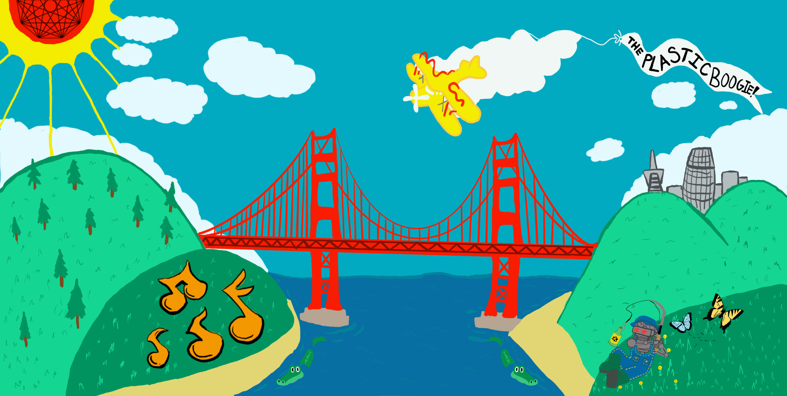
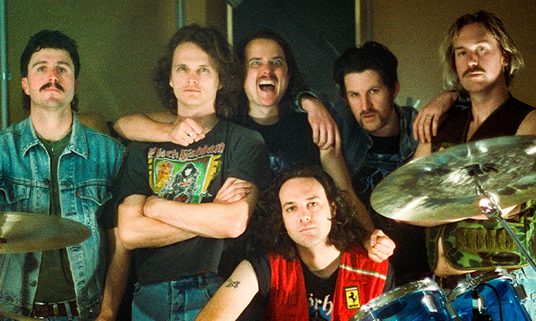
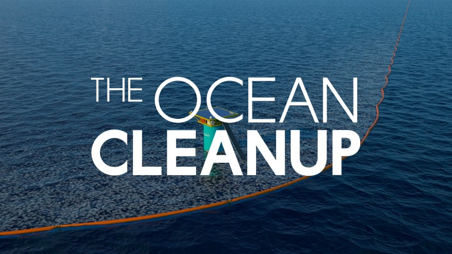
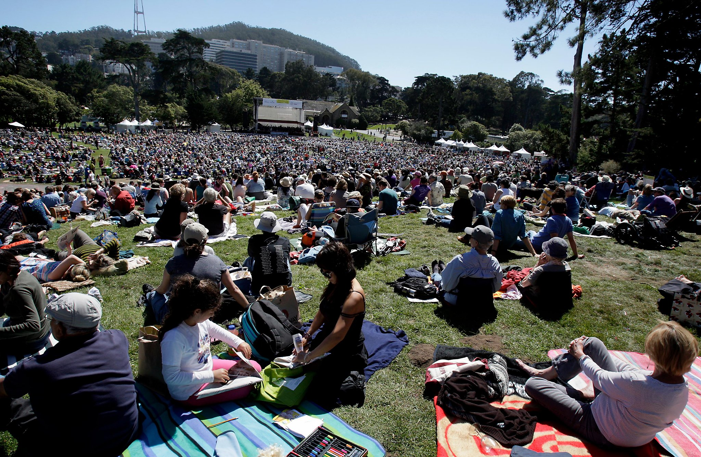
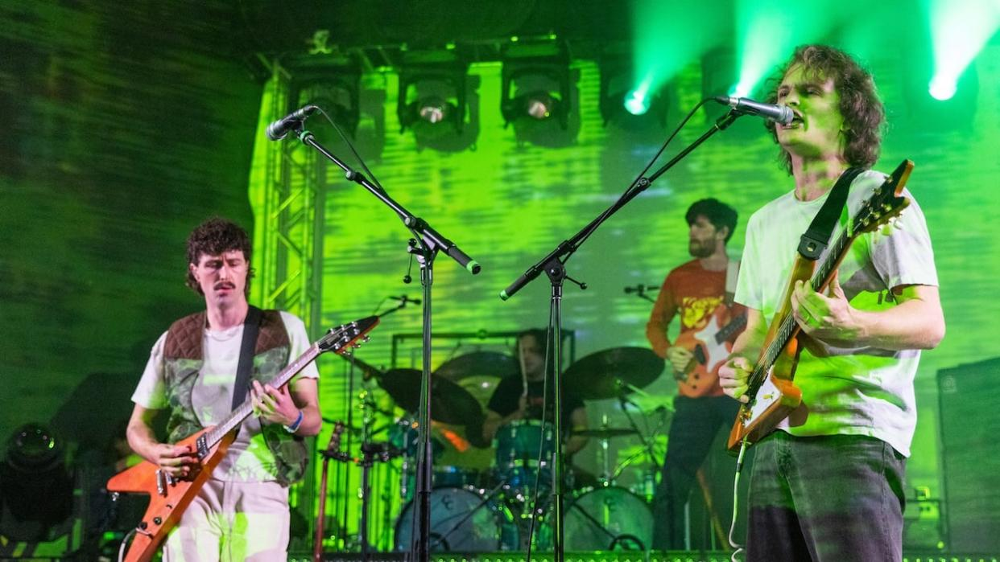
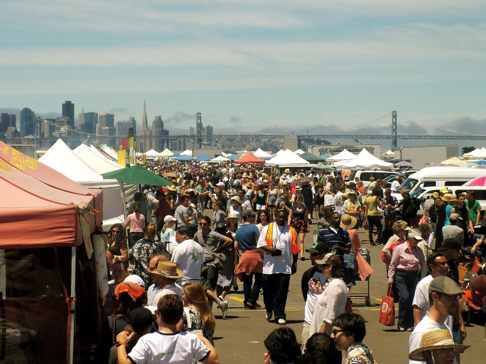
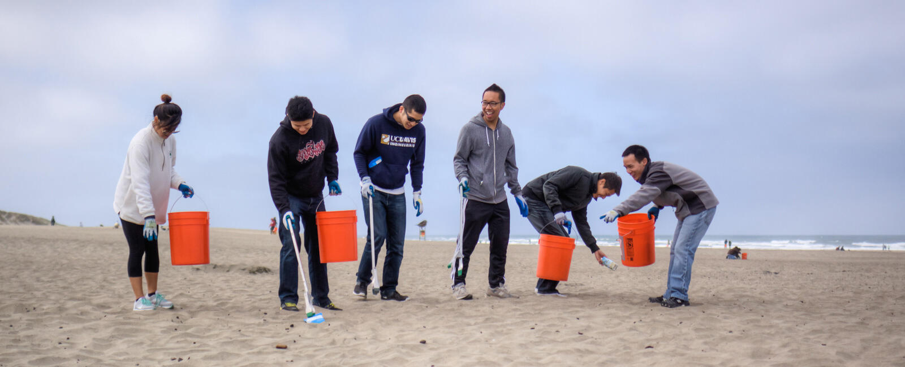

Meet the Band

King Gizzard and the Lizard Wizard are an Australian band, known globally for their wildly varied sonic experimentation and highly prolific output. Their lineup has remained mostly the same since their inception in 2010; that being Stu Mackenzie on guitar and vocals, Joey Walker on guitar and vocals, Ambrose "Amby" Kenny-Smith on keyboards and vocals, Nicholas "Cookie" Craig on guitar and keyboards, Lucas Harwood on bass and finally Michael "Cavs" Cavanagh on drums. Their second drummer, Eric Moore, departed the band in 2020 to focus on their self made label Flightless Records. No other band works as hard as them - they have released 25 full studio albums since 2010, and they released 5 albums in 2017 alone. With their insane work ethic and legendary live shows, King Gizzard has acumulated a cultlike following dubbed lovingly as the "Weirdo Swarm" who follow them around the world on tour and produce their own officially endorsed bootleg albums, similar to the heyday of the Grateful Dead. The band is also known for their environmentally charged lyrics on cuts like "Plastic Boogie" and "If Not Now Then When?" the latter of which they recieved the inaugural Australian Environmental Music Prize for, and donated the prize money to The Wilderness Society. If any band knows what its like to be on the edge of an environmental apocalypse, its KGLW - making them the perfect fit to headline this festival.
The Ocean Cleanup

The main sponsor of The Plastic Boogie festival is The Ocean Cleanup, A nonprofit organization started in 2013 by Dutch inventor Boyan Slat in his hometown of Delft, the Netherlands. The company was started in recognition of the fact that every year, millions of tons of plastic enter the world's Oceans, and the problem isn't going away by itself. Their goal as an organization is to develop technologies to both halt the trash flow from rivers and remove the already existing plastics in the ocean. Their goal is to remove 90% of plastics from the ocean by 2040, and spread awareness about how people and corporations can contribute to the elimination of plastic trash from the world's oceans. All profits from ticket and merch sales will be contributed back to the Ocean Cleanup to further their goals and contribute to a cleaner earth.
Events
All events will take place in the Robin Williams Meadow in San Francisco's Golden Gate Park, with the exception of the Ocean Beach cleanup on day 2.

Day 1-3
King Gizzard Residency

Every night of the event starting at 8:00 pm, King Gizzard will take the stage to play a 3 hour marathon set, featuring their most environmentally themed songs.
Sustainable Vendor Bazaar

Local vendors are invited to sell their wares within the festival grounds, provided they supply proof of their dedication to reducing waste and furthering the cause (no plastics!). Also featuring official merchandise from the band and the event.
Beach Cleanup (Day 2 Only)

On May 25th, starting at 10 am, we invite all attendees to join us for a beach cleanup on nearby Ocean Beach. A ticket for the event is not required so invite all your friends too! The cleanup will end at 3 pm.